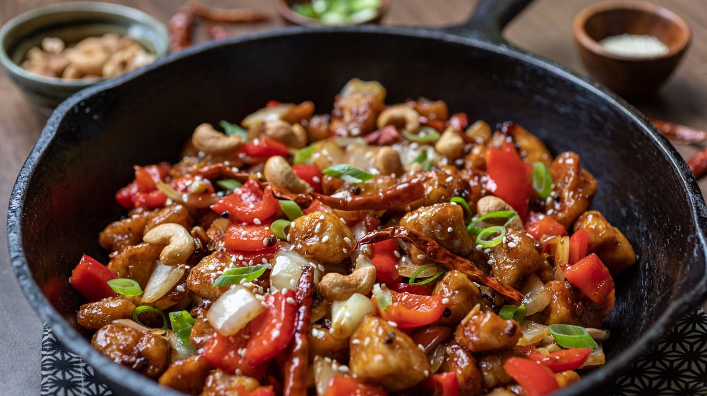

Szechuan Chicken

Description
Szechuan Chicken is an easy recipe with a perfect harmony of sweetness and spiciness in one savory dish. Ready in less than 30 minutes, it is the ideal weekday dinner meal!
Szechuan Chicken is a classic Chinese dish that is pretty healthy with an explosion of flavors. If you crave some delicious and easy-to-make Chinese food, then this dish is for you. Also, you can make it with any vegetables you have on hand or desire. This dish is very versatile and just perfect for a quick dinner during busy weeknights.
Ingredients
- chicken
- sauce
- vegetable oil
- szechuan peppercorn
- veggies
- soy sauce
Steps
- Szechuan chicken is best prepared using chicken breasts cut into cubes. Also, we like to marinate the chicken in a mixture of seasonings with cornstarch. This takes some additional time, but it is definitely worth it. However, if you are short on time, then skip the marinade part.
- The seasonings include rice wine, soy sauce, white pepper, and sesame oil. These alone make the meat super tasty. After marinating, fry the chicken until cooked evenly on both sides.
- Next, in a large skillet, over medium-high heat, stir fry the vegetables. Simply add in minced garlic, ginger, chilies, bell peppers, scallions (or green onions), nuts, and the famous Szechuan peppercorn.
- After a few minutes, toss in the fried chicken to combine with the rest of the ingredients. Remove from heat, garnish with sesame seeds, scallions, and more chili peppers!
- Serve with rice and you’ve got yourself a complete savory meal of carbs, protein, and fiber.